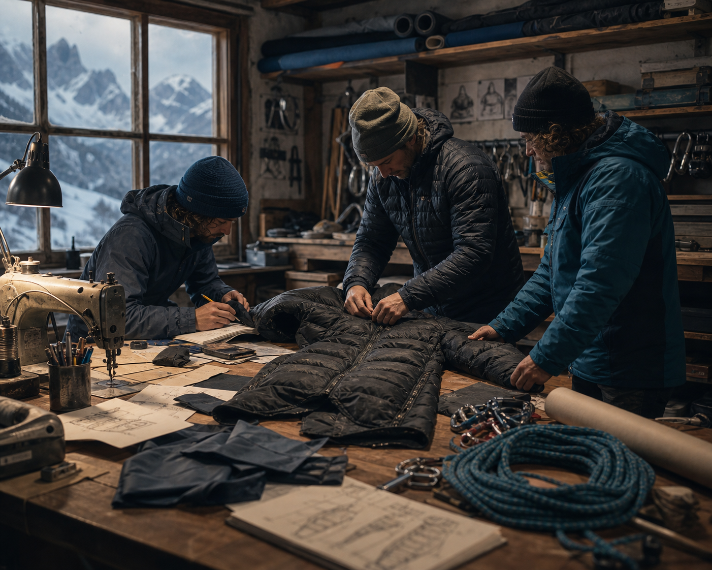

브랜드 창립
산악 장비의 한계를 느낀 몇 명의 클라이머가, 직접 쓰기 위한 옷을 만들기 시작했습니다.
정상을 향한 오랜 걸음이 곧 브랜드의 이야기가 되었습니다.
가장 혹독한 환경에서도 사람을 지키는 옷.
BEYOND THE SUMMIT는 그 단순한 믿음 하나로 시작해, 지금도 산에서 답을 찾습니다.

장비의 한계 앞에서 답답함을 느낀 몇 명의 산악인이 있었습니다. 시중의 옷은 도시를 위한 것이었고, 그들이 오르는 능선의 바람과 추위를 견디지 못했습니다.
결국 그들은 직접 만들기로 했습니다. 자신이 입고 오를 옷을, 자신의 목숨을 맡길 수 있는 수준으로. 그렇게 작은 작업실에서 BEYOND THE SUMMIT의 첫 재킷이 태어났습니다.
정상은 끝이 아니라 통과점이라고 믿습니다. 우리는 오르는 순간보다, 다시 안전하게 내려와 다음 산을 마주하는 삶을 더 중요하게 생각합니다.
그래서 화려함 대신 신뢰를, 유행 대신 오래 쓰이는 물건을 만듭니다. 브랜드 이름에는 정상 너머의 여정을 함께한다는 약속이 담겨 있습니다.
“우리는 정상이 아니라,
그 너머를 향합니다.”
산악 장비의 한계를 느낀 몇 명의 클라이머가, 직접 쓰기 위한 옷을 만들기 시작했습니다.
극한의 추위에서 검증한 첫 고보온 다운 인슐레이션을 완성하며 방향을 잡았습니다.
8,000m급 원정대에 장비를 공급하며, 실험실이 아닌 산에서의 검증을 본격화했습니다.
방풍·방수·투습을 한 겹에 담은 3레이어 셸로 라인업을 넓혔습니다.
재생 나일론과 책임 다운(RDS)을 표준 소재로 채택하기 시작했습니다.
가장 혹독한 겨울, 정상 그 너머의 도전을 지금도 함께하고 있습니다.